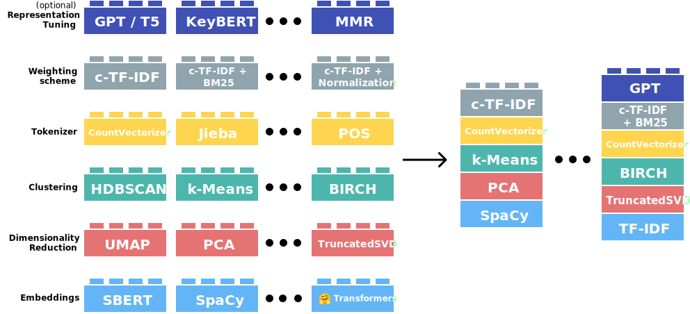

Generative AI in Customer Experience Improvement
Context and Relevance - What?
- Customer Experience has always eagered to offer personalized experiences
- Now with GenAI capabilities is possible to have personalizations 1 to 1
- In a Zendesk survey, 80 % of customers expect companies to have chat agents

Context and Relevance - Why?
- Customer Experience is key for any Organization
- There was a personalization barrier, that has been broken by GenAI


Context and Relevance - How?

How GenAI is changing CX and which challenges are ahead?
Why CX teams are eager to implement Gen AI?
Improve resource management
- Automatize several routine tasks
- Human personnel can focus on complex issues
- Gen AI can increase productivity up to 50 %
Optimal Customer Service
- Customer Services can be provided continously
- Outsmart the current rule-based chatbots, blogs
Customer Interaction
- Can be interpreted the sentiments the sentiments and intentions of users


- Generative AI can sustain a consistent service quality
- Override frustration, effectiveless solutions provide by rule-based chatbots
- User detects uniform support quality at any time
- Improve skills of agent in real-time interactions
- Instantanious suggestions to provide assertive most probable answers
- IA can drilldown on big pools of data and obtain customers needs

- Users expect hypertailored options since organizations possess quantity of data about them
- Gen AI can connect with CRM to provide specific recommendations
- Advanced segmentation and target marketing strategies
Technical Drilldown
Focus on evaluate how the CX field is considering aspects as transparency, security, human connection, bias when implementing GenAI use cases:
| Topic | Question |
CX usage |
|
Human Control |
|
Privacy and Data Security |
|
Bias Mitigation |
|
Transparency and communication |
|
- CX professionals that had interacted with GenAI platforms and implemented in their organizations
- Feedback retrieved from software review ratings webpage
- The reviews are related about 24 GenAI platforms tha aim to improve CX tasks, which resulted in 730 valid reviews to process.
| Model | Description |
|---|---|
| Tidio | A live chat and chatbot platform that helps businesses automate customer service and increase sales through AI-powered conversations |
| Kore.AI | Enterprise-grade conversational AI platform that helps organizations build sophisticated virtual assistants and chatbots |
| Botpress | Open-source chatbot creation platform that allows developers to build, debug and deploy conversational applications |
| Twixor | Customer engagement platform offering omnichannel communication solutions with AI-powered automation |
Data Extraction

Topic Extraction
For topic modeling it has been used BERTopic because of its capacity to manouver complex data text.

What we learned? - Human Likeliness & Compliancy
Human Likeliness
- 90 % of reviewers aim for a service with human qualities as empathy, care and comprenhension
- GenAI platforms are being assigned to repetitive tasks, meanwhile human agents keep the analytical ones
Privacy
Only 15 % of user mention any aspect about privacy topic
Relevant topics are data security implementation, customer data protection

What we learned? - Privacy & Ethics

Compliance
- 10 % of implementers ask about regulation meets
- User mentioned that GenAI platforms help them meet industry standars regulations
- In chatbots, it is seek to provide precise answers, which are meet with validation processes
Ethics
- 20 % of users mention ethical concerns
- Importance in augment human capacities rather than replace
- Importance to mention to users they are interacting with AI provided solutions